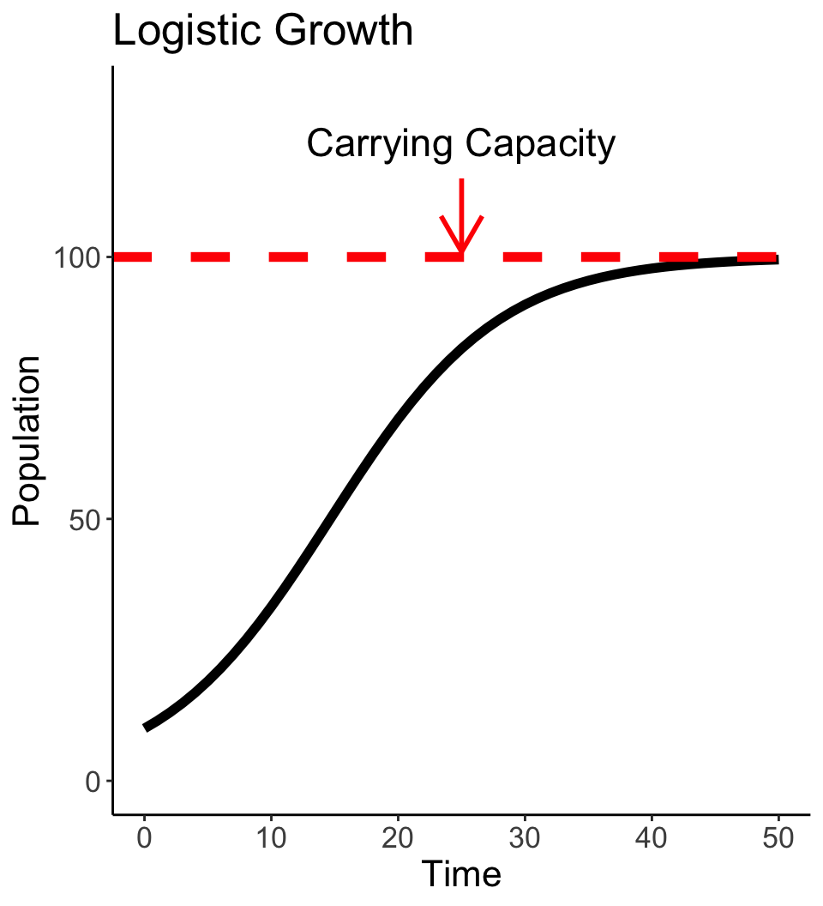
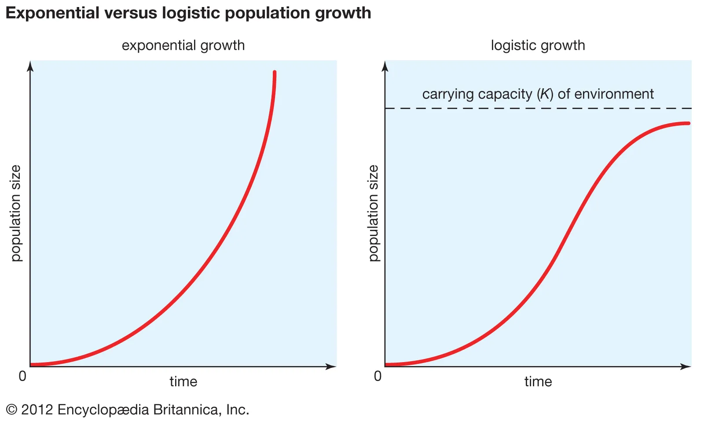
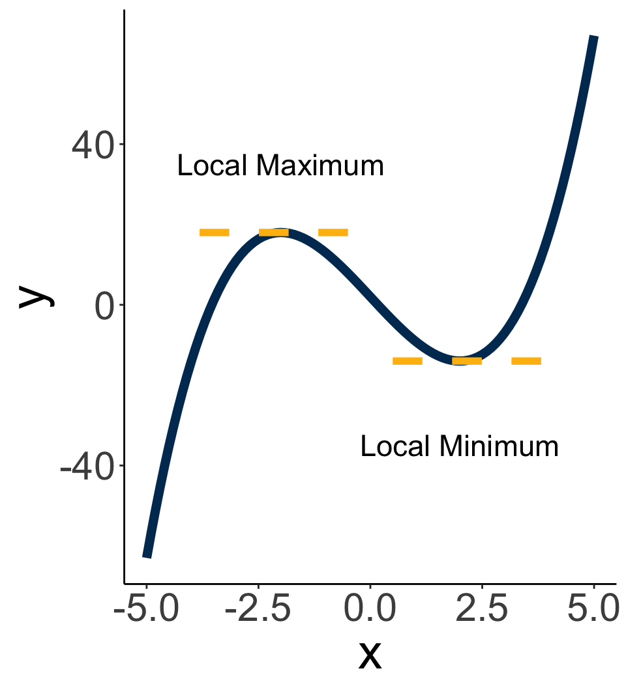

Rules and Applications of Derivatives
Bren Calculus Workshop
Carmen Galaz García, Ph.D.
Bren School of Environmental Science & Management
Last updated: Sep 19, 2025
Materials have been adapted from Nathaniel Grimes work for the Bren Calculus Workshop.
Team Review
How did everyone feel about the problem set?
Any questions?
Discuss with team
Rules for differentiation (4)
Product Rule
Rules for differentiation (4)
Product Rule
Let \(f(x)\) and \(g(x)\) be differentiable functions. Then
\[ \large \frac{d}{dx}[f(x)*g(x)]=f(x)g'(x)+g(x)f'(x) \]
What this is saying:
Breakdown multiplication into two separate functions
Then take the first function times the derivative of the second, and add the second function times the derivative of the first.
Product rule example
✏️ Find the derivative of \(y=2x(x^2+3x)\).
Product rule example
✏️ Find the derivative of \(y=2x(x^2+3x)\).
We have that:
\[ \begin{align} y&=2x(x^2+3x) \\[3px] y&=\overbrace{2x}^{f(x)}\overbrace{(x^2+3x)}^{g(x)} &\text{Break into two functions}\\[3px] \frac{dy}{dx}&=\overbrace{2x}^{f(x)}\overbrace{(2x+3)}^{g'(x)}+\overbrace{2}^{f'(x)}\overbrace{(x^2+3x)}^{g(x)} &\text{Apply Power Rule}\\[3px] \frac{dy}{dx}&=6x^2+12x &\text{Algebra clean up} \end{align} \]
What is another way we could have computed this derivative?
Rules for differentiation (5)
Quotient Rule
Rules for differentiation (5)
Quotient Rule
\[ \large \frac{d}{dx}\left [\frac{f(x)}{g(x)}\right]=\frac{g(x)f'(x)-f(x)g'(x)}{[g(x)]^2} \]
Notice:
Same idea as product rule, but order matters.
The denominator has to be \(g(x)\)
Quotient rule example
✏️ Find the derivative of \(y=\frac{x^2}{(x+1)}\).
Quotient rule example
✏️ Find the derivative of \(y=\frac{x^2}{(x+1)}\).
\[ \begin{align} y &= \frac{x^2}{(x+1)} \\[3px] y &= \frac{\overbrace{x^2}^{f(x)}}{\underbrace{(x+1)}_{g(x)}} &\text{Identify functions}\\[3px] \frac{dy}{dx} &= \frac{\overbrace{(x+1)}^{g(x)}\overbrace{2x}^{f'(x)}-\overbrace{x^2}^{f(x)}\overbrace{(1)}^{g'(x)}}{\underbrace{(x+1)^2}_{[g(x)]^2}} &\text{Quotient rule}\\[3px] \frac{dy}{dx} &= \frac{x^2+2x}{(x+1)^2} &\text{Simplify} \\[3px] \end{align} \]
Composition of functions
If we have two functions \(f\) and \(g\), the composition of \(f\) and \(g\) is
\[f\circ g (x) = f(g(x)).\]
This means that the output of \(g(x)\) is now the input of \(f(x)\). In other words, composition of functions means applying one function to the result of another.
Examples
✏️ Let \(f(x) = x^2\) and \(g(x) = 2x+3\). What is \(f\circ g (x)\)?
✏️ Let \(h(x) = \sqrt{ 3x^2 + 10}\). How can we write \(h\) as a composition of functions?
Composition of functions
If we have two functions \(f\) and \(g\), the composition of \(f\) and \(g\) is
\[f\circ g (x) = f(g(x)).\]
This means that the output of \(g(x)\) is now the input of \(f(x)\). In other words, composition of functions means applying one function to the result of another.
Examples
✏️ Let \(f(x) = x^2\) and \(g(x) = 2x+3\). What is \(f\circ g (x)\)?
We have that \(f\circ g (x) = (2x+3)^2\).
✏️ Let \(h(x) = \sqrt{ 3x^2 + 10}\). How can we write \(h\) as a composition of functions?
If we make \(f(x) = \sqrt{x}\) and \(g(x) = 3x^2 +10\) then we have that \(f\circ g (x) = \sqrt{ 3x^2 + 10}.\)
Rules for differentiation (6)
Chain Rule
Rules for differentiation (6)
Chain Rule
\[ \large \frac{d}{dx}f\circ g(x)= \frac{d}{dx} f(g(x)) \frac{d}{dx}g(x) \]
“Take the derivative of the outermost function then multiply by the derivative of the innermost.”
Probably the most important rule for advanced calculus!
You may also encounter the chain rule in this form
\[\frac{dy}{dx} = \frac{dy}{du}\cdot\frac{du}{dx}.\]
The next example will show us what this means.
Chain rule example
✏️ What is the derivative of \(y = (x^3 -2)^2\)? Let’s use a trick called \(u\)-substitution.
- Identify the inner function and label it as \(u\). Rewrite \(y\) in terms of \(u\):
- Take the derivative of \(y\) with respect to \(u\) and substitute \(u\):
- And the derivative of \(u\) with respect to \(x\):
- Put everything back into the chain rule and simplify:
Chain rule example
✏️ What is the derivative of \(y = (x^3 -2)^2\)? Let’s use a trick called \(u\)-substitution.
- Identify the inner function and label it as \(u\). Rewrite \(y\) in terms of \(u\):
\[ \begin{align} y &= (x^3-2)^2 \\ u &= x^3-2 \\ y &= u^2 \end{align} \]
- Take the derivative of \(y\) with respect to \(u\) and substitute \(u\):
\[\frac{dy}{du} = 2u = 2(x^3-2).\]
- And the derivative of \(u\) with respect to \(x\):
\[\frac{du}{dx} = 3x^2.\]
- Put everything back into the chain rule and simplify:
\[ \begin{align} \frac{dy}{dx} &= \frac{dy}{du}\cdot\frac{du}{dx} \\ &= 2(x^3-2)(3x^2) = 6x^5 -12x^2. \end{align} \]
The number \(e\)
The number \(e\) is a constant in mathematics, it is approximately \(e\approx 2.72\), but really its decimals continue infinitely without any pattern.
It’s exact value can be described as \[ e = \lim_{n\to \infty}\left(1+\frac{1}{n}\right)^n. \]
Like any other number, \(e\) follows normal power properties
\[ \begin{align} e^{x+y}&=&e^x\cdot e^y \\ e^{-x}&=&\frac{1}{e^x}\\ e^{x-y}&=&\frac{e^x}{e^y}\\ e^{rx}&=&(e^x)^r \end{align} \]
The exponential funciton
The exponential function \(e^x\) is the number \(e\) raised to the \(x\) power. In function notation you may sometimes see it as
\[ f(x) = e^x \ \ \text{ or } \ \ \text{exp}(x).\]

Derivative of the exponential function
We have that \[ \large \frac{d}{dx}e^x=e^x \]
The derivative at every point on this line is simply \(e(x)\).

Higher order derivatives
We can continue to take derivatives of derivatives.
The second derivative becomes the rate of change of the rate of change.
If we interpret the first derivative as velocity, then the second derivative is acceleration.
Notation:
- Function: \(f(x) = y\)
- 1st derivative: \(f'(x)\) or \(\frac{dy}{dx}f\)
- 2nd derivative: \(f''(x)\) or \(\frac{d^2y}{dx^2}\)
- nth derivative: \(f^{(n)}(x)\) or \(\frac{d^ny}{dx^n}\)
Team Assessment
Part 1
✏️ Identify which differentiation rule or rules works best for each function.
\[ \begin{align} \text{A) }y=e^{\sqrt{3x+10}} & &\text{B) }g(y)=\frac{(8y+2)}{(4y+3)^3} & & \text{C) }p(b)=18b\cdot e^{2b} \end{align} \]
Part 2
- Find the first derivative of
\[ f(x)=(2x-x^2)^3. \]
- Find the first derivative of
\[ f(x)=\frac{2}{x^2+1}. \]
- Find the third derivative of
\[ f(x)=x^2(2x+1). \]
Application of Derivatives
Exponential functions in the world
Logistic growth
Growth modeled by an exponential function is unbounded, but resource limits do exist.
Modeling growth using a logistic growth model: growth is initially exponential but levels off as the environment’s carrying capacity is reached. The growth rate is given by
\[ \frac{dN}{dt} = rN\left(\frac{K-N}{K}\right). \]
where \(N=\text{population, }r=\text{growth rate, }t=\text{time, and }K=\text{carrying capacity}.\)

Important in fisheries and biological conservation
Using derivatives we can find crucial information to solve environmental problems
Derivatives allow us to:
- Find instantaneous rate of change at any point
- Find when functions are increasing or decreasing
Find the optimal values of functions
- Optimal values are key to designing effective policies
How quickly is the human population rising right now?
Von Foersters et al. (1960) used the following function to describe the increase in human population over time:
\[ x(t)=\frac{1}{c-\beta t} \]
Where \(c=9.833*10^{-3}\), \(\beta=4.849*10^{-6}\), and \(x\) is the total human population in millions at year \(t\).
✏️ Answer the following questions using the Dochy et al. model.
- How quickly was the human population increasing in 1450?
- What should be the population growth rate in 2024 according to this model?
Use derivatives to find the answers!
- How quickly was the human population increasing in 1450?
“How quickly” are code words for “take the first derivative” of \(x(t)=\frac{1}{c-\beta t}\). Let’s do that:
\[ \begin{align} x(t)&=\frac{1}{c-\beta t} \\ x(t)&=(c-\beta t)^{-1} &\text{Rearrange} \\ \frac{dx}{dt}&=\beta(c-\beta t)^{-2} &\text{Chain and Power Rule}\\ \end{align} \]
Since the question is asking for how quickly was the population increasing in 1450 we need to evaluate the derivative at \(t=1450\). This is \[x'(1450)=.61\]
So, human population in 1450 was increasing at a rate of .61 million per year.
Use derivatives to find the answers!
- What should be the population growth rate in 2024 according to this model?
“Population growth rate in 2024” means “evaluate the first derivative at $t=2024”. So let’s do that:
\[x'(2024) = \beta(c-\beta 2024)^{-2} = 13,980.\]
So, human population in 2024 will be increasing at a rate of 13,980 million per year according to this model.
After some investigation, human population is estimated to be growing at about 0.85% per year, which is around 70 million more people every year.
The model isn’t wrong, just not predictive out of sample
Positive and Negative Derivatives
Increasing and decreasing functions
Increasing and decreasing functions
Take an interval \((a,b)\). A function \(f(x)\) is…
… increasing on \((a,b)\) if \(f(x_1) \leq f(x_2)\) every time \(x_1<x_2\) and \(x_1, x_2\) in \((a,b)\).
… decreasing on \((a,b)\) if \(f(x_1) \geq f(x_2)\) every time \(x_1<x_2\) and \(x_1, x_2\) in \((a,b)\).
… constant on an interval \((a,b)\) if \(f(x_1) = f(x_2)\) for every \(x_1, x_2\) in \((a,b)\).
üôÇ This all really means what you think it means:
Increasing and decreasing functions
Let \(f(x)\) be a function that is differentiable on the interval \((a,b)\), then:
Increasing and decreasing functions
Let \(f(x)\) be a function that is differentiable on the interval \((a,b)\), then:
If \(f'(x)>0\) for all \(x\) values between \(a\) and \(b\), then \(f(x)\) is increasing on \((a,b)\)
If \(f'(x)<0\) for all \(x\) values betwen \(a\) and \(b\), then \(f(x)\) is decreasing on \((a,b)\)
If \(f'(x)=0\) for all values between \(a\) and \(b\), then \(f(x)\) is constant on \((a,b)\)
A funciton \(f(x)\) has…
- a local maximum at \(p\) if \(f(p)\) is greater than or equal to the values of \(f\) for points near \(p\).
- a local minimum at \(p\) if \(f(p)\) is less than or equal to the values of \(f\) for points near \(p\).
- a critical point \(p\) if \(f'(p)=0\). The value \(f(p)\) at a critital point \(p\) is called a critical value.
Finding critical points helps us solve optimization problems: every maximum and miniumum occurs at a critical point.
Finding maxima/minima
Finding maxima/minima
1) Find critical points with the 1st derivative:
If \(f(x)\) has a local maximum or minimum at \(p\) then \(f'(p)\) =0.
This means that we need to look for local max/min among critical points (the values for \(x\) for which \(f'(x)=0\)).
2) Apply the 2nd derivative test to critical points:
Whether a critical point is a maximum or minimum requires us to test if the function is concave up or concave down around that point.
If \(f'(p)=0\) and \(f''(p)<0\) then \(f(x)\) has a local maximum at \(p\).
If \(f'(x)=0\) and \(f''(x)>0\), then \(f(x)\) has a local minimum at \(p\).
Example
✏️ Consider the function \(f(x)=x^3-12x+2\). What are its local maxima and minima?
Example
✏️ Consider the function \(f(x)=x^3-12x+2\). What are its local maxima and minima?
- Find critical points with 1st derivative:
\[ \begin{align} f(x)&=x^3-12x+2 \\ f'(x)&=3x^2-12 \\ x^*&=-2 & x^*=2 \end{align} \]
- Apply 2nd derivative test to critical points:
\[ \begin{align} f''(x)&=6x \\ f''(-2)&<0 &f''(2)>0 \end{align} \]
By the first order conditions we know that \(x=2\) and \(x=-2\) are the critical points of the function.
The second order conditions inform us that \(f(x)\) has a local maximum at \(x=-2\) and a local minimum at \(x=2\).

Team Assessment
✏️ 1. How many local minimums and maximums can you find on this graph?
✏️ 2. Find all the critical points of this function. Identify which are minima and which are maxima. \[ f(x)=2x^3-6x^2+3x+15 \]
✏️ 2. Find all the critical points of this function. Identify which are minima and which are maxima.
\[ f(x)=2x^3-6x^2+3x+15 \]
✏️ 3. Your team has been hired to help the city of Santa Barbara to help eliminate a nasty pollutant in our streams. You are choosing between two policies. Policy A provides \(\sqrt{10x+4}\) benefits where \(x\) is the dollar spent on interventions. Policy B provides \(\sqrt{20x+4}\) benefits for every dollar spent. However, each policy has a cost associated with each. Policy A has a constant linear cost at \(2x\) and Policy B has a constant linear cost at \(3x\).
a) Which policy is cheaper?
b) Find the optimal amount of interventions dollars to spend for each policy. Consider both costs and benefits. [Hint: Remember \(\sqrt{}\) is just \(x^{\frac{1}{2}}\). You can use exponent rules to help solve]
c) Which policy provides the most maximun net benefits?
d) Which policy should the city of Santa Barbara pursue?
Solution to exercise 3
a. Which policy is cheaper?
Policy A is cheaper: it costs \(2x\) vs. \(3x\) for Policy B.
b. Optimal spending = maximizing net benefits
For this, we need to create a function representing the net benefits for each policy:
\[ \begin{align} B_A (x) &= \sqrt{10x+4} - 2x & \text{net benefits for policy A,}\\ B_A (x) &= \sqrt{20x+4} - 3x & \text{net benefits for policy B}. \end{align} \] Solving for critical points and applying the second derivative test we get that \(B_A\) benefits are maximized when \(x_A=\frac{9}{40}=0.225\) dollars are spent and \(B_B\) benefits are maximized when \(x_B=\frac{16}{45}\approx0.356\) dollars are spent.
b. Which policy provides the most benefits?
If we compare the maximum net benefits offered by each policy we get \[
B_A (0.225) = 2.05\ \text{ and }
B_B (\frac{16}{45})\ \approx 2.27.
\]
So policy B provides the maximum net benefits.
d. Which policy should the city pursue?
Because Policy B yields the larger maximal net benefit (≈2.27), the City of Santa Barbara should probably pursue Policy B, assuming there are no restrictions in how much money they can invest in the policy.